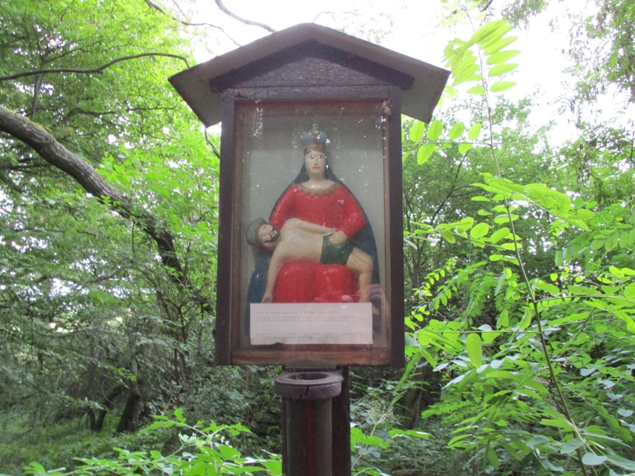
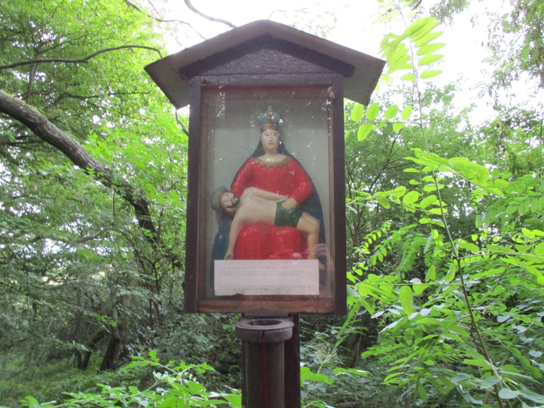

Obrázek v Boří nechal v roce 1890 postavit pan Vyoral, otec Ludvíka a Aloise Vyoralových.
Alois byl mladý a byl velmi nemocný na plíce. Když se pak po dlouhé době uzdravil, nechal jeho otec postavit svatý obrázek. Byl ale jenom papírový, představující sv. Izidora, který byl po čase velmi potrhán. Toho si všimla stařenka Rosíková a nahradila jej dřevěnou soškou Panny Marie s Ježíšem, která byla dříve umístěna ve výklenku jejich domu.
Ve třicátých letech minulého století nechala tuto sošku opravit a zhotovit k ní skřínku. V dnešní době tudy projde málo lidí a tak obrázek upadá v zapomnění. Dříve však každý, kdo šel do Napajedel musel projít kolem něj.